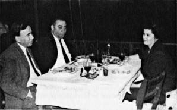

Bebecik,
Saat akşamın 7:00’si. Oturduğum bir kuytu lokantada şiş kebabını beklerken bu mektubu yazmaya başladım. Sen hiçbir zaman ARADA[57] değilsin ama, bu mektubun aradan çıkması lâzım. Çünkü yemekten sonra Gençlik parkının kuytu bir köşesine saklanıp şiir yazmayı denemek istiyorum.
Önce Ankara’ya gelmemi teşvik ettiğin için teşekkür etmeliyim, çünkü biraz kendime geldiğimi sanıyorum. Açıkça söyleyeyim ki hastane[58] moralimi bir hayli bozmuştu, şimdi sinirlerim düzeldi, çalışma gücümün geri geldiğini hissediyorum. Oraya döner dönmez masaya bir oturdum mu uzun bir süre bezginlik getirmeden çalışabilirim.
Sonra sevinçliyim, çünkü Almanya’ya kesin olarak gitmiyorum, bu işin kendiliğinden ve mecburen geri kalması beni pek memnun etti.
Cevdet Kudret birkaç kişi arasında beni de cumartesi gecesi mutlaka evine yemeğe çağırdığı için dönüşüm müsaadenle bir gün gecikecek, yani burda bir gün fazla kalıyorum. Otobüs biletlerimizi Tahir, Sabahattin Batur ve ben pazar sabahı için aldık. Otobüs sabah saat 7:00’de kalkıyor, saat 16:00 veya 17:00’- de evde olurum.
Ankara müthiş sıcak, iki gündür geceleri biraz rüzgâr çıkıyor, ama otel cehennem gibi. Bizim ev bu sıcağın yanında serin bir şerbet gibi.
Ama benim içim gene rahat değil Bebecik. Hakkınızdan çalıyor, buralarda avare dolaşıyorum. İçki içmediğim, başkaca bir engel de olmadığı için yatarken dua ediyor, Tanrıdan sağlığınızı, sıhhatinizi istiyorum. Her şeyin başı sıhhat, gerisi boş. Ben razıyım, hasta olmayayım da hiç evden çıkmayayım. Burda iştahım iyi. Her sabah iki bardak süt içiyor, iki büyük sandviç yiyorum. Yemekler de ona göre. O sürü sürü haplar bitti, şimdilik midem hiç bozulmadı, her gün sık sık gazoz içtiğim halde.
Sık sık ahbapları bırakıp kaçıyorum, müthiş içerliyorlar. Gelince anlatırım.
Gündüz geçiyor da gece otele dönünce bir ıssızlık çöküyor içime. Az kaldı, Bebeciğe kavuşmaya az kaldı. Çoktandır bulaşık yıkamaya hasret kaldım, az kaldı.
On beş yıla yakın evlilik hayatımızda sana ilk defa hediye aldım, getiriyorum, bir şişe mayi krem. Güzelliğin kremlere muhtaç değil ama o kadar bakındığım halde vitrinlerde daha uygun bir şey bulamadım. Geç oldu ama temiz oldu. Mediha teyze[59] “Yıllar var göremedim, gelinimiz yine öyle güzel mi?” dedi. “Ona o güzellik benden geçti, her sene gram gram ona biraz daha güzellik veriyorum” dedim.
Ya işte böyle Bebecik, bekle!
Boşuna değil seni sevmem
Bu güzellikle!
B.

Fazıl Hüsnü Dağlarca ve Huriye Necatigil ile birlikte, bir akşam yemeğinde (Mart 1960).